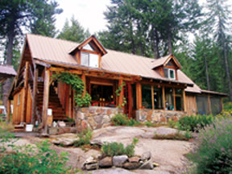
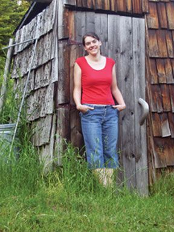
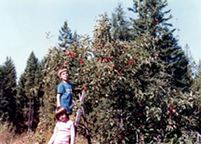
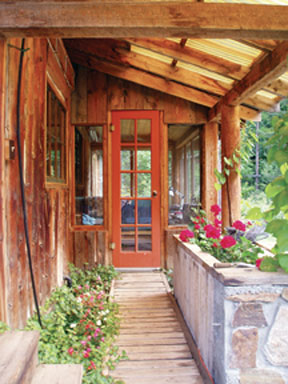
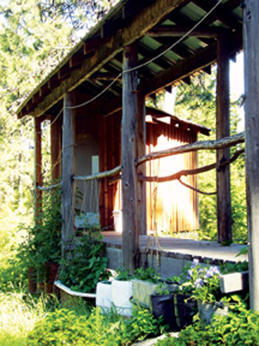
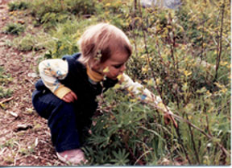
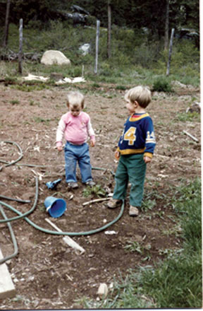
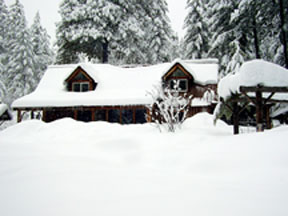
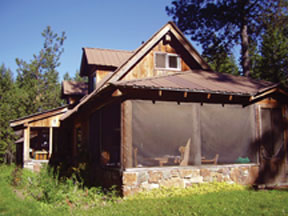

My usual response when asked where I grew up is “You’ve probably never heard of it.” Newport, Wash., population 2,000, is in the mountains of eastern Washington, about 70 miles from the Canadian border. Fifteen miles west of Newport and two miles off the pavement, the homestead where I was raised is even further off the map.
My older brother Tighe and I grew up in a continually evolving log house that was started in 1975 by three college friends: John Stuart and Carol Mack (my parents) and Cheryl Long (now editor in chief of Mother Earth News). The house is on 40 acres of wild land where my parents choose to live a sustainable and low-impact existence. For our family, this lifestyle meant extensive gardening, using an outhouse and constant exploration of the outdoors.
Now I’m a resident of Portland, Ore., with a degree in social work, and I’m thankful my first 18 years were spent in the country developing a keen awareness of my natural surroundings and learning to value a self-sufficient lifestyle.
One of the greatest advantages of growing up in our rural setting was eating homegrown organic produce. The crops from our half-acre garden were supplemented with some items from town, but fresh fruit, vegetables and herbs were the norm each summer. Until I left home, I did not realize what a luxury it was to simply walk into the garden to harvest dinner or the occasional snack. My parents claim the strawberry yield increased dramatically after I left for college.
Even in winter, we ate homegrown fruit and veggies. Carrots and potatoes were packed in sand and stored, along with bags of apples, in underground barrels insulated with dried leaves. Squash was a staple all winter long, as were garlic and dried Indian corn, which we ground into purple cornmeal. We blanched and froze green beans, Swiss chard, corn, broccoli and cauliflower. We canned salsa and dilly beans and froze blueberries, raspberries and wild huckleberries to be served on pancakes and waffles throughout the winter.
Every fall when the first frost threatened, usually in mid-October, Mom and Dad would watch the thermometer at night. If it looked like the temperature would drop below freezing, we would all troop out into the garden in the dead of night, bundled up in hats and sweaters, to bring in the last of the harvest before the frost. The potatoes and carrots were protected underground, but we needed to pick the last of the apples, pumpkins, squash and tomatoes. Plus, we’d harvest basil and other crops that had been left to ripen as long as they could.
The nighttime harvest was my favorite fall tradition. Usually it was a clear night, so we would be under the moon and stars with flashlights and lanterns, coming back an hour or two later with baskets and boxes full of the year’s final bounty.
My parents’ house has many unique qualities beyond its vertical-log walls and outdoor stairs: most noticeably, its lack of a standard toilet. Instead, I grew up with a classy homemade composting privy that provides fertilizer for the ornamental beds and is sealed against any possibility of contaminating groundwater. The composter has a polished wood toilet and windows on two sides. It’s accessed via a covered walkway from the main house and does double duty as a “natural history museum,” housing my parents’ collection of shells, rocks and miscellaneous items displayed on shelves crafted by my mother. It is easy to spend more than the necessary amount of time there, admiring the view or listening to the woods on a summer night, enjoying an atmosphere that is rarely found accompanying a more orthodox commode.
Bathing was another part of everyday life that took an unusual form during my upbringing. We did not have a “real” bathroom until about 1996, when I was in the sixth grade. At this point, Tighe and I were beginning to get self-conscious about taking a bath in half of a blue plastic 50-gallon barrel in front of the woodstove in the main room. Mom and Dad partitioned a section of the house and built a counter, cabinets and a bathtub/shower. Having lived without a water heater for 20 years, my parents maintained that a couple of big pots of water on the stove were quite effective for heating water. So even after the bathroom was finished, the fixtures only ran with cold water. For a shower, we emptied a pot of hot water into a 5-gallon bucket, carried it into the bathroom, cooled it with water from the tap and then bathed by dipper. It probably sounds primitive to most people, but this always felt more fulfilling to me than a standard shower, perhaps because it enabled me to bathe by my own work rather than just the turn of a knob.
When Tighe and I were old enough to start school, our parents decided that we should be home-schooled for the first few years. (They worked contract jobs in forestry that allowed enough flexibility for one or both of them to teach us.) There were several reasons for this decision, the most prominent was the fact that in 1990 the bus ride from the end of our driveway to Sadie Halstead Elementary in Newport took an hour and a half. My parents reasoned that no 6-year-old should have to sit on a bus for three hours a day. So we were kept home, with Mom and Dad teaching us from workbooks, and we joined a “home-school group” with three children of family friends who lived nearby. We met every Friday and rotated between our three families’ houses, giving us a chance to socialize, do educational projects and generally run amok in the woods. By the time we started public school in 1992, more bus routes had been created and the ride was down to 40 minutes.
Tighe and I spent most of our childhood outdoors, partly because we had so much land to explore and partly because our family did not own a television. While other kids our age were parked in front of the TV, we were racing around the hills, getting all kinds of dirty. Living sans television resulted in our being widely regarded as weirdos while in elementary and middle school, but I would not trade that experience for anything. (Although there were a few years when I really did want a TV, not because I liked television, but because it would stop the other kids from thinking I was a freak.)
With no TV to distract us, winter nights usually saw the family sitting around the woodstove with one parent reading aloud to the rest of us. This continued until Tighe and I were in high school and had homework and cross-country practice to fill our evenings. I still miss that tradition. We all read on our own as well. Literature filled our lives with imagination and adventure, instead of advertisement jingles and an addiction to pop culture.
From an early age, Tighe and I had a propensity for making forts and naming every landmark. We had Eagle Perch (a series of huts north of the house, made of boughs left from tree pruning), Fort Orchard (well stocked with boxes of fir cones in case of enemy invasion) and countless others. The geography of my childhood was defined by a network of trees, forts, rock formations, deer trails and dirt roads. For my brother and me, the distinction between indoors and out was blurred, and our sense of place and home was not attached specifically to a house, but to the land where we grew up.
One major advantage of growing up with acres of country at our disposal was the ability to stage creative parties and get-togethers. People would always spend time outside when we had gatherings at our house - no matter the season. Winter offered sledding and snowball fights. We once had an epic three-hour game of team tag in 2 feet of snow under a full moon. In the summer, parties meant flashlight tag, bonfires, boffer battles (involving padded swords made with plastic pipe and duct tape) and sleeping under the stars.
Much of the furniture, dishes and decorations in the house and outbuildings were made by hand. The tables in the house were both handmade, and the headboard of my childhood bed was constructed by my mother out of narrow, peeled logs - the trails of wood-boring beetles serving as decorative ac cents. In the kitchen, the pots and pans hung from a three-pronged branch that my father peeled, varnished and pegged to the wall above the stove. In general, if it could be made instead of bought new, it was. In many cases, secondhand building supply stores provided drawers or cabinetry that were repainted or varnished, and sometimes provided with new drawer handles made of bent branches. Tighe and I undertook our own construction projects throughout the years. During high school, I built a new door for the garden shed, and both Tighe and I helped build the new greenhouse a few years later.
Growing up in the country also meant frequent sightings of wild animals. Deer were as common as squirrels. Seasons were marked by changes in bird song. And hearing four different packs of coyotes howling at night was not unusual. Mountain lions lived in the area, but they are elusive creatures, and we usually saw only their tracks and scat. We shared the property with at least one black bear every year, and a couple times one came onto our porch. Usually it was second nature to store fruit inside the house rather than on the screened-in front porch, but we forgot once or twice. Most memorable was the night when a box of apples on the porch led a bear to stealthily lacerate the screen wall with its claws and clamber in for a snack. Somehow it maneuvered so quietly that none of us knew anything about it until morning.
Regular exposure to wildlife enabled our family to achieve that which is rare and extremely valuable: a sense of awe and cautious respect for animals commonly portrayed as dangerous predators. I had sometimes envisioned bears leaping out of the woods and eating me whole, but the first time I saw one while alone, my initial thought was how lucky I was to experience the moment.
Today I live in a friendly, nature-oriented city. I love Portland, but it’s a long way from the woods near Newport in many ways. Here, 450 miles away, I sometimes have trouble seeing myself as the grubby, small-town girl I was while growing up. After six years in Portland, I have adapted to life as a social worker who commutes by bike and public transit and enjoys living in the city.
But while I thrive on city life and all it offers, I try to find ways to cling to the lifestyle I had with my parents. I compost, plant a garden when I am able, and get out of town to hike and camp as much as possible. I go back to Newport every few months, and when I do, I feel a deep peace and satisfaction I will never achieve living in a metropolitan area.
I had to move away from everything familiar to realize how much I valued those things. When I went to college and found myself surrounded by city kids, I was set apart by being from the boondocks. Most of my classmates regarded all of eastern Washington as the backwoods. So when I told them about the log house, composting toilet, bucket shower and no TV, it got some attention and helped me feel unique. I still get a little nostalgic thinking about washing my hair in a bucket, heating bricks on the woodstove to warm my feet on winter nights, and going outside to get to the toilet. I now know I was blessed to have the privilege of seeing the stars and moon on my way to the bathroom every night of my first 18 years.
I love knowing that my upbringing gives me a worldview different than most. Sometimes I wish I had grown up less sheltered and known more about the outside world, but other times I am grateful I was protected from the bustle and grittiness of life beyond the homestead and our little town. There are still times when my lack of exposure to popular culture embarrasses me, but I’m grateful I had the chance to be a kid and not know too much too early. My childhood years were truly innocent, and the miles of forest and distance from other people gave me more safety than most children are allowed.
As I look to the future, I know that someday I want to move “back to the land,” where I can’t see any houses or highways from my front porch. I want my children to grow up the way my brother and I did, enjoying the opportunities nature offers and learning to value what they can grow and make with their own hands.
|
 LAUREL WATER The house was started in 1975 by three people without prior building experience. |
 CAROL MACK Author Liz Stuart on the homestead where she grew up. |
 CAROL MACK Liz and Tighe picking ‘Spartan’ apples in 1990. |
|
 LAUREL WATER Like the house that was built by hand, many of the creative ac cents were added by family and friends. This do-it-yourself attitude influenced Liz to take on many handmade projects throughout the years. |
 LIZ STUART The house has many unique qualities: most noticeably, its detached composting toilet. |
 CAROL MACK Liz began exploring the natural world at an early age. The photo is from 1986. |
|
 CAROL MACK Liz and Tighe “working” in the garden. |
 LIZ STUART Winter on the homestead, Feb. 2008. |
 LIZ STUART This charming home was built by the author’s parents using local stone and logs cut from the property. When building a vertical-log structure, smaller logs can be used. |